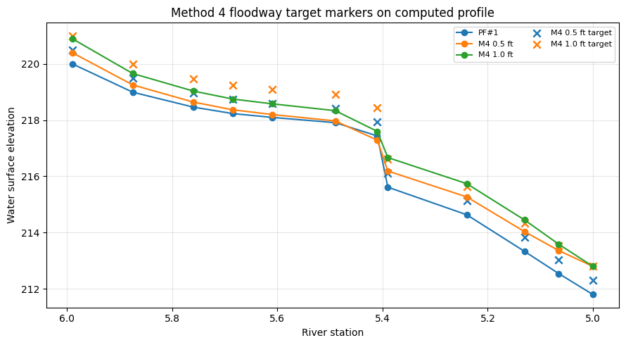
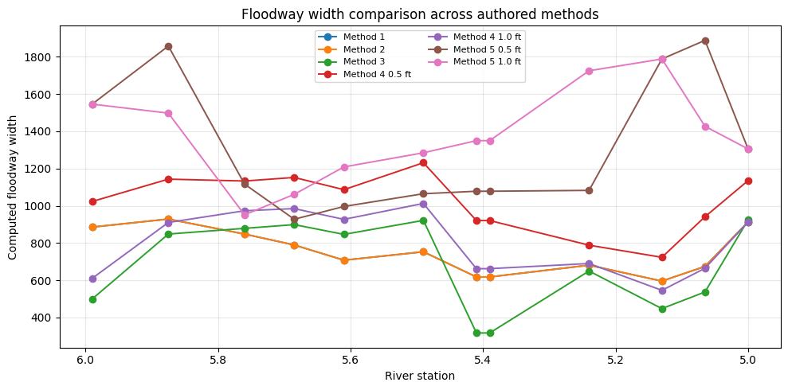

from pathlib import Path
import os
import shutil
import h5py
import matplotlib.pyplot as plt
import pandas as pd
from IPython.display import display
import ras_commander
from ras_commander import (
HdfResultsPlan,
RasCmdr,
RasExamples,
RasFloodway,
RasPlan,
init_ras_project,
)
Development Mode¶
When running this notebook from a source checkout instead of an installed package, start Jupyter from the repository root or add the repository root to PYTHONPATH before launching Jupyter. Generated example projects and run outputs are written under working/ unless RAS_COMMANDER_WORKDIR is set.
Steady Floodway Encroachment Authoring¶
This notebook demonstrates the steady-flow floodway authoring API on the official HEC-RAS "Example 6 - Floodway Determination" project. It parses existing encroachment records, authors Method 1 through Method 5 plans without GUI steps, computes those plans through RasCmdr, validates a computed floodway profile through RasCheck, and compares floodway widths across methods.
HEC-RAS exposes five floodplain encroachment methods. HEC-2 method 6 energy targeting is represented in HEC-RAS by Method 5 with a maximum energy-change target.
def find_repo_root(start: Path) -> Path:
for candidate in [start, *start.parents]:
if (candidate / "pyproject.toml").exists() and (candidate / "ras_commander").exists():
return candidate
return start
REPO_ROOT = find_repo_root(Path.cwd())
WORK_ROOT = Path(os.environ.get(
"RAS_COMMANDER_WORKDIR",
REPO_ROOT / "working" / "floodway_encroachment",
))
PROJECT_NAME = "Example 6 - Floodway Determination"
RAS_EXE = Path(os.environ.get(
"HECRAS_EXE",
r"C:/Program Files (x86)/HEC/HEC-RAS/7.0/Ras.exe",
))
assert RAS_EXE.exists(), f"HEC-RAS executable not found: {RAS_EXE}"
WORK_ROOT.mkdir(parents=True, exist_ok=True)
project_path = RasExamples.extract_project(
PROJECT_NAME,
output_path=WORK_ROOT,
suffix="api_authoring",
)
ras_project = init_ras_project(project_path, str(RAS_EXE), load_results_summary=False)
print(f"ras-commander: {ras_commander.__version__}")
print(f"Project: {ras_project.project_name}")
print(f"Project folder: {ras_project.project_folder}")
display(ras_project.plan_df[["plan_number", "Plan Title", "Flow File", "Geom File"]])
2026-05-01 17:07:42 - ras_commander.RasExamples - INFO - Found zip file: C:\Users\billk_clb\AppData\Local\ras-commander\examples\Example_Projects_7_0.zip
2026-05-01 17:07:42 - ras_commander.RasExamples - INFO - Loading project data from CSV...
2026-05-01 17:07:42 - ras_commander.RasExamples - INFO - Loaded 67 projects from CSV.
2026-05-01 17:07:42 - ras_commander.RasExamples - INFO - ----- RasExamples Extracting Project -----
2026-05-01 17:07:42 - ras_commander.RasExamples - INFO - Extracting project 'Example 6 - Floodway Determination' as 'Example 6 - Floodway Determination_api_authoring'
2026-05-01 17:07:42 - ras_commander.RasExamples - INFO - Folder 'Example 6 - Floodway Determination_api_authoring' already exists. Deleting existing folder...
2026-05-01 17:07:42 - ras_commander.RasExamples - INFO - Existing folder 'Example 6 - Floodway Determination_api_authoring' has been deleted.
2026-05-01 17:07:42 - ras_commander.RasExamples - INFO - Successfully extracted project 'Example 6 - Floodway Determination' to H:\Symphony\ras-commander\CLB-307\notebook_runs\223_steady_floodway_encroachment\Example 6 - Floodway Determination_api_authoring
2026-05-01 17:07:42 - ras_commander.RasPrj - INFO - No unsteady flow files found in the project.
2026-05-01 17:07:42 - ras_commander.RasMap - WARNING - RASMapper file not found: H:\Symphony\ras-commander\CLB-307\notebook_runs\223_steady_floodway_encroachment\Example 6 - Floodway Determination_api_authoring\FLODENCR.rasmap
2026-05-01 17:07:42 - ras_commander.RasMap - WARNING - No .rasmap file found for this project. Creating empty rasmap_df.
2026-05-01 17:07:42 - ras_commander.RasPrj - WARNING - Could not resolve project CRS for H:\Symphony\ras-commander\CLB-307\notebook_runs\223_steady_floodway_encroachment\Example 6 - Floodway Determination_api_authoring
2026-05-01 17:07:42 - ras_commander.RasPrj - INFO - ras-commander v0.96.1 | An open-source project of CLB Engineering Corporation (https://clbengineering.com/) | Docs: https://ras-commander.readthedocs.io | GitHub: https://github.com/gpt-cmdr/ras-commander
2026-05-01 17:07:42 - ras_commander.RasPrj - INFO - Project initialized: FLODENCR | Folder: H:\Symphony\ras-commander\CLB-307\notebook_runs\223_steady_floodway_encroachment\Example 6 - Floodway Determination_api_authoring
2026-05-01 17:07:42 - ras_commander.RasPrj - INFO - Using HEC-RAS executable: C:\Program Files (x86)\HEC\HEC-RAS\7.0\Ras.exe
ras-commander: 0.96.1
Project: FLODENCR
Project folder: H:\Symphony\ras-commander\CLB-307\notebook_runs\223_steady_floodway_encroachment\Example 6 - Floodway Determination_api_authoring
| plan_number | Plan Title | Flow File | Geom File | |
|---|---|---|---|---|
| 0 | 01 | Method 5 Encroachment | 01 | 01 |
| 1 | 05 | Method 1 Encroachment | 01 | 01 |
| 2 | 02 | Method 4 Encroachment - Trial 1 | 02 | 01 |
| 3 | 04 | Method 4 Encroachment - Trial 3 | 01 | 01 |
| 4 | 03 | Method 4 Encroachment - Trial 2 | 01 | 01 |
Existing Encroachment Records¶
The example project already contains Method 1, Method 4, and Method 5 records. These are parsed from plan text before any new authoring.
existing_frames = []
for plan_number in ["01", "02", "05"]:
parsed = RasFloodway.parse_encroachments(plan_number, ras_object=ras_project).copy()
parsed["plan_number"] = plan_number
parsed["plan_title"] = RasPlan.get_plan_title(plan_number, ras_object=ras_project)
existing_frames.append(parsed)
existing_encroachments = pd.concat(existing_frames, ignore_index=True)
summary = (
existing_encroachments
.groupby(["plan_number", "plan_title", "method"], dropna=False)
.size()
.reset_index(name="records")
)
display(summary)
display(
existing_encroachments[
["plan_number", "river", "reach", "node", "profile_number", "method", "value_1", "value_2"]
].head(18)
)
2026-05-01 17:07:42 - ras_commander.RasPlan - INFO - Retrieved Plan Title: Method 5 Encroachment
2026-05-01 17:07:42 - ras_commander.RasPlan - INFO - Retrieved Plan Title: Method 4 Encroachment - Trial 1
2026-05-01 17:07:42 - ras_commander.RasPlan - INFO - Retrieved Plan Title: Method 1 Encroachment
| plan_number | plan_title | method | records | |
|---|---|---|---|---|
| 0 | 01 | Method 5 Encroachment | 5.0 | 13 |
| 1 | 02 | Method 4 Encroachment - Trial 1 | 0.0 | 24 |
| 2 | 02 | Method 4 Encroachment - Trial 1 | 1.0 | 2 |
| 3 | 02 | Method 4 Encroachment - Trial 1 | 4.0 | 26 |
| 4 | 02 | Method 4 Encroachment - Trial 1 | NaN | 26 |
| 5 | 05 | Method 1 Encroachment | 1.0 | 13 |
| 6 | 05 | Method 1 Encroachment | 4.0 | 13 |
| plan_number | river | reach | node | profile_number | method | value_1 | value_2 | |
|---|---|---|---|---|---|---|---|---|
| 0 | 01 | Beaver Creek | Kentwood | 5.99 | 2 | 5.0 | 1.0 | 1.2 |
| 1 | 01 | Beaver Creek | Kentwood | 5.875* | 2 | 5.0 | 1.0 | 1.2 |
| 2 | 01 | Beaver Creek | Kentwood | 5.76 | 2 | 5.0 | 1.0 | 1.2 |
| 3 | 01 | Beaver Creek | Kentwood | 5.685* | 2 | 5.0 | 1.0 | 1.2 |
| 4 | 01 | Beaver Creek | Kentwood | 5.61 | 2 | 5.0 | 1.0 | 1.2 |
| 5 | 01 | Beaver Creek | Kentwood | 5.49* | 2 | 5.0 | 1.0 | 1.2 |
| 6 | 01 | Beaver Creek | Kentwood | 5.41 | 2 | 5.0 | 1.0 | 1.2 |
| 7 | 01 | Beaver Creek | Kentwood | 5.4 | 2 | 5.0 | 1.0 | 1.2 |
| 8 | 01 | Beaver Creek | Kentwood | 5.39 | 2 | 5.0 | 1.0 | 1.2 |
| 9 | 01 | Beaver Creek | Kentwood | 5.24* | 2 | 5.0 | 1.0 | 1.2 |
| 10 | 01 | Beaver Creek | Kentwood | 5.13 | 2 | 5.0 | 1.0 | 1.2 |
| 11 | 01 | Beaver Creek | Kentwood | 5.065* | 2 | 5.0 | 1.0 | 1.2 |
| 12 | 01 | Beaver Creek | Kentwood | 5.0 | 2 | 5.0 | 1.0 | 1.2 |
| 13 | 02 | Beaver Creek | Beaver Creek | 5.99 | 2 | 4.0 | 0.8 | 4.0 |
| 14 | 02 | Beaver Creek | Beaver Creek | 5.99 | 3 | 0.0 | 4.0 | 1.0 |
| 15 | 02 | Beaver Creek | Beaver Creek | 5.99 | 4 | NaN | NaN | NaN |
| 16 | 02 | Beaver Creek | Beaver Creek | 5.875* | 2 | 4.0 | 0.8 | 4.0 |
| 17 | 02 | Beaver Creek | Beaver Creek | 5.875* | 3 | 0.0 | 4.0 | 1.0 |
Author Method 1-5 Plans¶
The cloned plans keep the original example project intact. Method 4 and Method 5 clone their own steady-flow files, then RasFloodway creates new floodway profiles and downstream starting WSE values.
def clean_station(value) -> float:
return float(str(value).replace("*", "").strip())
def hdf_plan_path(plan_number: str) -> Path:
return Path(ras_project.project_folder) / f"{ras_project.project_name}.p{plan_number}.hdf"
def hdf_geom_path() -> Path:
return Path(ras_project.project_folder) / f"{ras_project.project_name}.g01.hdf"
def clone_plan(template_plan: str, title: str, shortid: str) -> str:
return RasPlan.clone_plan(
template_plan,
new_title=title,
new_plan_shortid=shortid,
ras_object=ras_project,
)
def clone_steady(template_flow: str, title: str) -> str:
return RasPlan.clone_steady(
template_flow,
new_title=title,
ras_object=ras_project,
)
source_m1 = RasFloodway.parse_encroachments("05", ras_object=ras_project)
method1_records = (
source_m1[(source_m1["reach"] == "Kentwood") & (source_m1["method"] == 1)]
[["river", "reach", "node", "method", "left_station", "right_station"]]
.to_dict("records")
)
locations = [
{"river": row["river"], "reach": row["reach"], "node": row["node"]}
for row in method1_records
]
method2_records = [
{
"river": row["river"],
"reach": row["reach"],
"node": row["node"],
"method": 2,
"fixed_top_width": row["right_station"] - row["left_station"],
}
for row in method1_records
]
method3_records = [
{
"river": row["river"],
"reach": row["reach"],
"node": row["node"],
"method": 3,
"conveyance_reduction_percent": 25,
}
for row in method1_records
]
plan_m1 = clone_plan("05", "API Method 1 Stations", "API_M1")
RasFloodway.set_encroachments(
plan_m1,
method1_records,
encroach_param=(-1, 10, 10),
profile_count=2,
ras_object=ras_project,
)
plan_m2 = clone_plan("05", "API Method 2 Width", "API_M2")
RasFloodway.set_encroachments(
plan_m2,
method2_records,
encroach_param=(-1, 10, 10),
profile_count=2,
ras_object=ras_project,
)
plan_m3 = clone_plan("05", "API Method 3 Conveyance", "API_M3")
RasFloodway.set_encroachments(
plan_m3,
method3_records,
encroach_param=(-1, 10, 10),
profile_count=2,
ras_object=ras_project,
)
flow_m4 = clone_steady("01", "API Method 4 Flow")
plan_m4 = clone_plan("05", "API Method 4 Trials", "API_M4")
RasPlan.set_steady(plan_m4, flow_m4, ras_object=ras_project)
m4_result = RasFloodway.create_method_4_trial_profiles(
plan_m4,
targets=[0.5, 1.0],
flow_number_or_path=flow_m4,
base_profile=1,
profile_names=["M4 0.5 ft", "M4 1.0 ft"],
locations=locations,
starting_wse_deltas=[0.5, 1.0],
metadata={"notebook": "223_steady_floodway_encroachment"},
ras_object=ras_project,
)
flow_m5 = clone_steady("01", "API Method 5 Flow")
plan_m5 = clone_plan("05", "API Method 5 Energy", "API_M5")
RasPlan.set_steady(plan_m5, flow_m5, ras_object=ras_project)
m5_result = RasFloodway.create_method_5_trial_profiles(
plan_m5,
targets=[0.5, 1.0],
flow_number_or_path=flow_m5,
base_profile=1,
profile_names=["M5 0.5 ft", "M5 1.0 ft"],
locations=locations,
starting_wse_deltas=[0.5, 1.0],
energy_targets=[0.25, 0.25],
metadata={"notebook": "223_steady_floodway_encroachment"},
ras_object=ras_project,
)
authored_plans = {
"Method 1": {"plan": plan_m1, "floodway_profile": "PF#2"},
"Method 2": {"plan": plan_m2, "floodway_profile": "PF#2"},
"Method 3": {"plan": plan_m3, "floodway_profile": "PF#2"},
"Method 4 0.5 ft": {"plan": plan_m4, "floodway_profile": "M4 0.5 ft"},
"Method 4 1.0 ft": {"plan": plan_m4, "floodway_profile": "M4 1.0 ft"},
"Method 5 0.5 ft": {"plan": plan_m5, "floodway_profile": "M5 0.5 ft"},
"Method 5 1.0 ft": {"plan": plan_m5, "floodway_profile": "M5 1.0 ft"},
}
setup_preview = []
for label, info in authored_plans.items():
enc = RasFloodway.parse_encroachments(info["plan"], ras_object=ras_project)
methods = sorted(enc.loc[enc["method"] > 0, "method"].dropna().unique().astype(int).tolist())
setup_preview.append({
"label": label,
"plan": info["plan"],
"floodway_profile": info["floodway_profile"],
"methods_written": methods,
"records": int((enc["method"] > 0).sum()),
})
display(pd.DataFrame(setup_preview))
display(m4_result["encroachments"].head())
2026-05-01 17:07:42 - ras_commander.RasUtils - INFO - File cloned from H:\Symphony\ras-commander\CLB-307\notebook_runs\223_steady_floodway_encroachment\Example 6 - Floodway Determination_api_authoring\FLODENCR.p05 to H:\Symphony\ras-commander\CLB-307\notebook_runs\223_steady_floodway_encroachment\Example 6 - Floodway Determination_api_authoring\FLODENCR.p06
2026-05-01 17:07:42 - ras_commander.RasUtils - INFO - Successfully updated file: H:\Symphony\ras-commander\CLB-307\notebook_runs\223_steady_floodway_encroachment\Example 6 - Floodway Determination_api_authoring\FLODENCR.p06
2026-05-01 17:07:42 - ras_commander.RasUtils - INFO - Project file updated with new Plan entry: 06
2026-05-01 17:07:42 - ras_commander.RasPrj - INFO - No unsteady flow files found in the project.
2026-05-01 17:07:42 - ras_commander.RasMap - WARNING - RASMapper file not found: H:\Symphony\ras-commander\CLB-307\notebook_runs\223_steady_floodway_encroachment\Example 6 - Floodway Determination_api_authoring\FLODENCR.rasmap
2026-05-01 17:07:42 - ras_commander.RasMap - WARNING - No .rasmap file found for this project. Creating empty rasmap_df.
2026-05-01 17:07:42 - ras_commander.RasPrj - WARNING - Could not resolve project CRS for H:\Symphony\ras-commander\CLB-307\notebook_runs\223_steady_floodway_encroachment\Example 6 - Floodway Determination_api_authoring
2026-05-01 17:07:42 - ras_commander.RasPrj - INFO - Updated results_df with 6 plan(s)
2026-05-01 17:07:42 - ras_commander.RasUtils - INFO - File cloned from H:\Symphony\ras-commander\CLB-307\notebook_runs\223_steady_floodway_encroachment\Example 6 - Floodway Determination_api_authoring\FLODENCR.p05 to H:\Symphony\ras-commander\CLB-307\notebook_runs\223_steady_floodway_encroachment\Example 6 - Floodway Determination_api_authoring\FLODENCR.p07
2026-05-01 17:07:42 - ras_commander.RasUtils - INFO - Successfully updated file: H:\Symphony\ras-commander\CLB-307\notebook_runs\223_steady_floodway_encroachment\Example 6 - Floodway Determination_api_authoring\FLODENCR.p07
2026-05-01 17:07:42 - ras_commander.RasUtils - INFO - Project file updated with new Plan entry: 07
2026-05-01 17:07:42 - ras_commander.RasPrj - INFO - No unsteady flow files found in the project.
2026-05-01 17:07:42 - ras_commander.RasMap - WARNING - RASMapper file not found: H:\Symphony\ras-commander\CLB-307\notebook_runs\223_steady_floodway_encroachment\Example 6 - Floodway Determination_api_authoring\FLODENCR.rasmap
2026-05-01 17:07:42 - ras_commander.RasMap - WARNING - No .rasmap file found for this project. Creating empty rasmap_df.
2026-05-01 17:07:42 - ras_commander.RasPrj - WARNING - Could not resolve project CRS for H:\Symphony\ras-commander\CLB-307\notebook_runs\223_steady_floodway_encroachment\Example 6 - Floodway Determination_api_authoring
2026-05-01 17:07:42 - ras_commander.RasPrj - INFO - Updated results_df with 7 plan(s)
2026-05-01 17:07:42 - ras_commander.RasUtils - INFO - File cloned from H:\Symphony\ras-commander\CLB-307\notebook_runs\223_steady_floodway_encroachment\Example 6 - Floodway Determination_api_authoring\FLODENCR.p05 to H:\Symphony\ras-commander\CLB-307\notebook_runs\223_steady_floodway_encroachment\Example 6 - Floodway Determination_api_authoring\FLODENCR.p08
2026-05-01 17:07:42 - ras_commander.RasUtils - INFO - Successfully updated file: H:\Symphony\ras-commander\CLB-307\notebook_runs\223_steady_floodway_encroachment\Example 6 - Floodway Determination_api_authoring\FLODENCR.p08
2026-05-01 17:07:42 - ras_commander.RasUtils - INFO - Project file updated with new Plan entry: 08
2026-05-01 17:07:42 - ras_commander.RasPrj - INFO - No unsteady flow files found in the project.
2026-05-01 17:07:42 - ras_commander.RasMap - WARNING - RASMapper file not found: H:\Symphony\ras-commander\CLB-307\notebook_runs\223_steady_floodway_encroachment\Example 6 - Floodway Determination_api_authoring\FLODENCR.rasmap
2026-05-01 17:07:42 - ras_commander.RasMap - WARNING - No .rasmap file found for this project. Creating empty rasmap_df.
2026-05-01 17:07:42 - ras_commander.RasPrj - WARNING - Could not resolve project CRS for H:\Symphony\ras-commander\CLB-307\notebook_runs\223_steady_floodway_encroachment\Example 6 - Floodway Determination_api_authoring
2026-05-01 17:07:42 - ras_commander.RasPrj - INFO - Updated results_df with 8 plan(s)
2026-05-01 17:07:43 - ras_commander.RasUtils - INFO - File cloned from H:\Symphony\ras-commander\CLB-307\notebook_runs\223_steady_floodway_encroachment\Example 6 - Floodway Determination_api_authoring\FLODENCR.f01 to H:\Symphony\ras-commander\CLB-307\notebook_runs\223_steady_floodway_encroachment\Example 6 - Floodway Determination_api_authoring\FLODENCR.f03
2026-05-01 17:07:43 - ras_commander.RasUtils - INFO - Successfully updated file: H:\Symphony\ras-commander\CLB-307\notebook_runs\223_steady_floodway_encroachment\Example 6 - Floodway Determination_api_authoring\FLODENCR.f03
2026-05-01 17:07:43 - ras_commander.RasUtils - INFO - Project file updated with new Flow entry: 03
2026-05-01 17:07:43 - ras_commander.RasPrj - INFO - No unsteady flow files found in the project.
2026-05-01 17:07:43 - ras_commander.RasMap - WARNING - RASMapper file not found: H:\Symphony\ras-commander\CLB-307\notebook_runs\223_steady_floodway_encroachment\Example 6 - Floodway Determination_api_authoring\FLODENCR.rasmap
2026-05-01 17:07:43 - ras_commander.RasMap - WARNING - No .rasmap file found for this project. Creating empty rasmap_df.
2026-05-01 17:07:43 - ras_commander.RasPrj - WARNING - Could not resolve project CRS for H:\Symphony\ras-commander\CLB-307\notebook_runs\223_steady_floodway_encroachment\Example 6 - Floodway Determination_api_authoring
2026-05-01 17:07:43 - ras_commander.RasPrj - INFO - Updated results_df with 8 plan(s)
2026-05-01 17:07:43 - ras_commander.RasUtils - INFO - File cloned from H:\Symphony\ras-commander\CLB-307\notebook_runs\223_steady_floodway_encroachment\Example 6 - Floodway Determination_api_authoring\FLODENCR.p05 to H:\Symphony\ras-commander\CLB-307\notebook_runs\223_steady_floodway_encroachment\Example 6 - Floodway Determination_api_authoring\FLODENCR.p09
2026-05-01 17:07:43 - ras_commander.RasUtils - INFO - Successfully updated file: H:\Symphony\ras-commander\CLB-307\notebook_runs\223_steady_floodway_encroachment\Example 6 - Floodway Determination_api_authoring\FLODENCR.p09
2026-05-01 17:07:43 - ras_commander.RasUtils - INFO - Project file updated with new Plan entry: 09
2026-05-01 17:07:43 - ras_commander.RasPrj - INFO - No unsteady flow files found in the project.
2026-05-01 17:07:43 - ras_commander.RasMap - WARNING - RASMapper file not found: H:\Symphony\ras-commander\CLB-307\notebook_runs\223_steady_floodway_encroachment\Example 6 - Floodway Determination_api_authoring\FLODENCR.rasmap
2026-05-01 17:07:43 - ras_commander.RasMap - WARNING - No .rasmap file found for this project. Creating empty rasmap_df.
2026-05-01 17:07:43 - ras_commander.RasPrj - WARNING - Could not resolve project CRS for H:\Symphony\ras-commander\CLB-307\notebook_runs\223_steady_floodway_encroachment\Example 6 - Floodway Determination_api_authoring
2026-05-01 17:07:43 - ras_commander.RasPrj - INFO - Updated results_df with 9 plan(s)
2026-05-01 17:07:43 - ras_commander.RasUtils - INFO - Successfully updated file: H:\Symphony\ras-commander\CLB-307\notebook_runs\223_steady_floodway_encroachment\Example 6 - Floodway Determination_api_authoring\FLODENCR.p09
2026-05-01 17:07:43 - ras_commander.RasUtils - INFO - File cloned from H:\Symphony\ras-commander\CLB-307\notebook_runs\223_steady_floodway_encroachment\Example 6 - Floodway Determination_api_authoring\FLODENCR.f01 to H:\Symphony\ras-commander\CLB-307\notebook_runs\223_steady_floodway_encroachment\Example 6 - Floodway Determination_api_authoring\FLODENCR.f04
2026-05-01 17:07:43 - ras_commander.RasUtils - INFO - Successfully updated file: H:\Symphony\ras-commander\CLB-307\notebook_runs\223_steady_floodway_encroachment\Example 6 - Floodway Determination_api_authoring\FLODENCR.f04
2026-05-01 17:07:43 - ras_commander.RasUtils - INFO - Project file updated with new Flow entry: 04
2026-05-01 17:07:43 - ras_commander.RasPrj - INFO - No unsteady flow files found in the project.
2026-05-01 17:07:43 - ras_commander.RasMap - WARNING - RASMapper file not found: H:\Symphony\ras-commander\CLB-307\notebook_runs\223_steady_floodway_encroachment\Example 6 - Floodway Determination_api_authoring\FLODENCR.rasmap
2026-05-01 17:07:43 - ras_commander.RasMap - WARNING - No .rasmap file found for this project. Creating empty rasmap_df.
2026-05-01 17:07:43 - ras_commander.RasPrj - WARNING - Could not resolve project CRS for H:\Symphony\ras-commander\CLB-307\notebook_runs\223_steady_floodway_encroachment\Example 6 - Floodway Determination_api_authoring
2026-05-01 17:07:43 - ras_commander.RasPrj - INFO - Updated results_df with 9 plan(s)
2026-05-01 17:07:43 - ras_commander.RasUtils - INFO - File cloned from H:\Symphony\ras-commander\CLB-307\notebook_runs\223_steady_floodway_encroachment\Example 6 - Floodway Determination_api_authoring\FLODENCR.p05 to H:\Symphony\ras-commander\CLB-307\notebook_runs\223_steady_floodway_encroachment\Example 6 - Floodway Determination_api_authoring\FLODENCR.p10
2026-05-01 17:07:43 - ras_commander.RasUtils - INFO - Successfully updated file: H:\Symphony\ras-commander\CLB-307\notebook_runs\223_steady_floodway_encroachment\Example 6 - Floodway Determination_api_authoring\FLODENCR.p10
2026-05-01 17:07:43 - ras_commander.RasUtils - INFO - Project file updated with new Plan entry: 10
2026-05-01 17:07:43 - ras_commander.RasPrj - INFO - No unsteady flow files found in the project.
2026-05-01 17:07:43 - ras_commander.RasMap - WARNING - RASMapper file not found: H:\Symphony\ras-commander\CLB-307\notebook_runs\223_steady_floodway_encroachment\Example 6 - Floodway Determination_api_authoring\FLODENCR.rasmap
2026-05-01 17:07:43 - ras_commander.RasMap - WARNING - No .rasmap file found for this project. Creating empty rasmap_df.
2026-05-01 17:07:43 - ras_commander.RasPrj - WARNING - Could not resolve project CRS for H:\Symphony\ras-commander\CLB-307\notebook_runs\223_steady_floodway_encroachment\Example 6 - Floodway Determination_api_authoring
2026-05-01 17:07:43 - ras_commander.RasPrj - INFO - Updated results_df with 10 plan(s)
2026-05-01 17:07:43 - ras_commander.RasUtils - INFO - Successfully updated file: H:\Symphony\ras-commander\CLB-307\notebook_runs\223_steady_floodway_encroachment\Example 6 - Floodway Determination_api_authoring\FLODENCR.p10
| label | plan | floodway_profile | methods_written | records | |
|---|---|---|---|---|---|
| 0 | Method 1 | 06 | PF#2 | [1] | 13 |
| 1 | Method 2 | 07 | PF#2 | [2] | 13 |
| 2 | Method 3 | 08 | PF#2 | [3] | 13 |
| 3 | Method 4 0.5 ft | 09 | M4 0.5 ft | [4] | 26 |
| 4 | Method 4 1.0 ft | 09 | M4 1.0 ft | [4] | 26 |
| 5 | Method 5 0.5 ft | 10 | M5 0.5 ft | [5] | 26 |
| 6 | Method 5 1.0 ft | 10 | M5 1.0 ft | [5] | 26 |
| river | reach | node | profile_number | profile_slot | method | value_1 | value_2 | left_station | right_station | target_top_width | conveyance_reduction_percent | target_surcharge | energy_target | encroach_param_1 | encroach_param_2 | encroach_param_3 | profile_count | plan_path | line_number | |
|---|---|---|---|---|---|---|---|---|---|---|---|---|---|---|---|---|---|---|---|---|
| 0 | Beaver Creek | Kentwood | 5.99 | 2 | 1 | 0 | 0.0 | 0.0 | None | None | None | None | NaN | None | -1.0 | 0.0 | 0.0 | 4.0 | H:\Symphony\ras-commander\CLB-307\notebook_run... | 22 |
| 1 | Beaver Creek | Kentwood | 5.99 | 3 | 2 | 4 | 0.5 | 0.0 | None | None | None | None | 0.5 | None | -1.0 | 0.0 | 0.0 | 4.0 | H:\Symphony\ras-commander\CLB-307\notebook_run... | 22 |
| 2 | Beaver Creek | Kentwood | 5.99 | 4 | 3 | 4 | 1.0 | 0.0 | None | None | None | None | 1.0 | None | -1.0 | 0.0 | 0.0 | 4.0 | H:\Symphony\ras-commander\CLB-307\notebook_run... | 22 |
| 3 | Beaver Creek | Kentwood | 5.875* | 2 | 1 | 0 | 0.0 | 0.0 | None | None | None | None | NaN | None | -1.0 | 0.0 | 0.0 | 4.0 | H:\Symphony\ras-commander\CLB-307\notebook_run... | 24 |
| 4 | Beaver Creek | Kentwood | 5.875* | 3 | 2 | 4 | 0.5 | 0.0 | None | None | None | None | 0.5 | None | -1.0 | 0.0 | 0.0 | 4.0 | H:\Symphony\ras-commander\CLB-307\notebook_run... | 24 |
Encroachment Targets On Profile¶
The target markers are the Method 4 target WSEs, calculated as base-profile WSE plus the authored target surcharge at each encroached river station.
for plan_number in sorted({info["plan"] for info in authored_plans.values()}):
result = RasCmdr.compute_plan(
plan_number,
ras_object=ras_project,
clear_geompre=True,
force_rerun=True,
num_cores=1,
verify=True,
)
assert result, f"HEC-RAS plan {plan_number} failed"
m4_hdf = hdf_plan_path(plan_m4)
m4_results = HdfResultsPlan.get_steady_results(m4_hdf)
m4_results["station_num"] = m4_results["node_id"].map(clean_station)
m4_results = m4_results.sort_values("station_num")
m4_profiles = ["PF#1", *m4_result["new_profile_names"]]
fig, ax = plt.subplots(figsize=(9, 5))
for profile in m4_profiles:
data = m4_results[m4_results["profile"] == profile]
ax.plot(data["station_num"], data["wsel"], marker="o", linewidth=1.5, label=profile)
base = (
m4_results[m4_results["profile"] == "PF#1"]
[["node_id", "wsel"]]
.rename(columns={"wsel": "base_wsel"})
)
m4_targets = m4_result["encroachments"].copy()
m4_targets = m4_targets[m4_targets["method"] == 4]
m4_targets["station_num"] = m4_targets["node"].map(clean_station)
m4_targets = m4_targets.merge(base, left_on="node", right_on="node_id", how="inner")
m4_targets["target_wsel"] = m4_targets["base_wsel"] + m4_targets["target_surcharge"]
profile_name_by_number = {
number: name for number, name in zip(m4_result["new_profile_numbers"], m4_result["new_profile_names"])
}
for profile_number, target_data in m4_targets.groupby("profile_number"):
profile_name = profile_name_by_number.get(profile_number, f"Profile {profile_number}")
ax.scatter(
target_data["station_num"],
target_data["target_wsel"],
s=56,
marker="x",
linewidths=1.8,
label=f"{profile_name} target",
)
ax.set_xlabel("River station")
ax.set_ylabel("Water surface elevation")
ax.set_title("Method 4 floodway target markers on computed profile")
ax.invert_xaxis()
ax.grid(True, alpha=0.3)
ax.legend(ncol=2, fontsize=8)
plt.tight_layout()
plt.show()
2026-05-01 17:07:43 - ras_commander.RasCmdr - INFO - Using ras_object with project folder: H:\Symphony\ras-commander\CLB-307\notebook_runs\223_steady_floodway_encroachment\Example 6 - Floodway Determination_api_authoring
2026-05-01 17:07:44 - ras_commander.geom.GeomPreprocessor - INFO - Clearing geometry preprocessor file for single plan: H:\Symphony\ras-commander\CLB-307\notebook_runs\223_steady_floodway_encroachment\Example 6 - Floodway Determination_api_authoring\FLODENCR.p06
2026-05-01 17:07:44 - ras_commander.geom.GeomPreprocessor - WARNING - No geometry preprocessor file found for: H:\Symphony\ras-commander\CLB-307\notebook_runs\223_steady_floodway_encroachment\Example 6 - Floodway Determination_api_authoring\FLODENCR.p06
2026-05-01 17:07:44 - ras_commander.geom.GeomPreprocessor - INFO - Geometry dataframe updated successfully.
2026-05-01 17:07:44 - ras_commander.RasCmdr - INFO - Cleared geometry preprocessor files for plan: 06
2026-05-01 17:07:44 - ras_commander.RasUtils - INFO - Using provided plan file path: H:\Symphony\ras-commander\CLB-307\notebook_runs\223_steady_floodway_encroachment\Example 6 - Floodway Determination_api_authoring\FLODENCR.p06
2026-05-01 17:07:44 - ras_commander.RasUtils - INFO - Successfully updated file: H:\Symphony\ras-commander\CLB-307\notebook_runs\223_steady_floodway_encroachment\Example 6 - Floodway Determination_api_authoring\FLODENCR.p06
2026-05-01 17:07:44 - ras_commander.RasCmdr - INFO - Set number of cores to 1 for plan: 06
2026-05-01 17:07:44 - ras_commander.RasCmdr - INFO - Running HEC-RAS from the Command Line:
2026-05-01 17:07:44 - ras_commander.RasCmdr - INFO - Running command: "C:\Program Files (x86)\HEC\HEC-RAS\7.0\Ras.exe" -c "H:\Symphony\ras-commander\CLB-307\notebook_runs\223_steady_floodway_encroachment\Example 6 - Floodway Determination_api_authoring\FLODENCR.prj" "H:\Symphony\ras-commander\CLB-307\notebook_runs\223_steady_floodway_encroachment\Example 6 - Floodway Determination_api_authoring\FLODENCR.p06"
2026-05-01 17:07:48 - ras_commander.RasCmdr - INFO - HEC-RAS execution completed for plan: 06
2026-05-01 17:07:48 - ras_commander.RasCmdr - INFO - Total run time for plan 06: 4.41 seconds
2026-05-01 17:07:48 - ras_commander.hdf.HdfResultsPlan - INFO - Using existing Path object HDF file: H:\Symphony\ras-commander\CLB-307\notebook_runs\223_steady_floodway_encroachment\Example 6 - Floodway Determination_api_authoring\FLODENCR.p06.hdf
2026-05-01 17:07:48 - ras_commander.hdf.HdfResultsPlan - INFO - Final validated file path: H:\Symphony\ras-commander\CLB-307\notebook_runs\223_steady_floodway_encroachment\Example 6 - Floodway Determination_api_authoring\FLODENCR.p06.hdf
2026-05-01 17:07:48 - ras_commander.hdf.HdfResultsPlan - INFO - Reading computation messages from HDF: FLODENCR.p06.hdf
2026-05-01 17:07:48 - ras_commander.hdf.HdfResultsPlan - INFO - Successfully extracted 723 characters from HDF
2026-05-01 17:07:48 - ras_commander.RasCmdr - INFO - Verification passed for plan 06
2026-05-01 17:07:48 - ras_commander.hdf.HdfResultsPlan - INFO - Using existing Path object HDF file: H:\Symphony\ras-commander\CLB-307\notebook_runs\223_steady_floodway_encroachment\Example 6 - Floodway Determination_api_authoring\FLODENCR.p06.hdf
2026-05-01 17:07:48 - ras_commander.hdf.HdfResultsPlan - INFO - Final validated file path: H:\Symphony\ras-commander\CLB-307\notebook_runs\223_steady_floodway_encroachment\Example 6 - Floodway Determination_api_authoring\FLODENCR.p06.hdf
2026-05-01 17:07:48 - ras_commander.hdf.HdfResultsPlan - INFO - Reading computation messages from HDF: FLODENCR.p06.hdf
2026-05-01 17:07:48 - ras_commander.hdf.HdfResultsPlan - INFO - Successfully extracted 723 characters from HDF
2026-05-01 17:07:48 - ras_commander.hdf.HdfResultsPlan - INFO - Using existing Path object HDF file: H:\Symphony\ras-commander\CLB-307\notebook_runs\223_steady_floodway_encroachment\Example 6 - Floodway Determination_api_authoring\FLODENCR.p06.hdf
2026-05-01 17:07:48 - ras_commander.hdf.HdfResultsPlan - INFO - Final validated file path: H:\Symphony\ras-commander\CLB-307\notebook_runs\223_steady_floodway_encroachment\Example 6 - Floodway Determination_api_authoring\FLODENCR.p06.hdf
2026-05-01 17:07:48 - ras_commander.hdf.HdfResultsPlan - INFO - Extracting Plan Information from: FLODENCR.p06.hdf
2026-05-01 17:07:48 - ras_commander.hdf.HdfResultsPlan - ERROR - Error parsing simulation times: time data 'Unknown' does not match format '%d%b%Y %H:%M:%S'
2026-05-01 17:07:48 - ras_commander.hdf.HdfResultsPlan - INFO - Using existing Path object HDF file: H:\Symphony\ras-commander\CLB-307\notebook_runs\223_steady_floodway_encroachment\Example 6 - Floodway Determination_api_authoring\FLODENCR.p06.hdf
2026-05-01 17:07:48 - ras_commander.hdf.HdfResultsPlan - INFO - Final validated file path: H:\Symphony\ras-commander\CLB-307\notebook_runs\223_steady_floodway_encroachment\Example 6 - Floodway Determination_api_authoring\FLODENCR.p06.hdf
2026-05-01 17:07:48 - ras_commander.hdf.HdfResultsPlan - INFO - Reading computation messages from HDF: FLODENCR.p06.hdf
2026-05-01 17:07:48 - ras_commander.hdf.HdfResultsPlan - INFO - Successfully extracted 723 characters from HDF
2026-05-01 17:07:48 - ras_commander.hdf.HdfResultsPlan - INFO - Using existing Path object HDF file: H:\Symphony\ras-commander\CLB-307\notebook_runs\223_steady_floodway_encroachment\Example 6 - Floodway Determination_api_authoring\FLODENCR.p06.hdf
2026-05-01 17:07:48 - ras_commander.hdf.HdfResultsPlan - INFO - Final validated file path: H:\Symphony\ras-commander\CLB-307\notebook_runs\223_steady_floodway_encroachment\Example 6 - Floodway Determination_api_authoring\FLODENCR.p06.hdf
2026-05-01 17:07:48 - ras_commander.RasPrj - INFO - Updated results_df with 1 plan(s)
2026-05-01 17:07:48 - ras_commander.RasCmdr - INFO - Using ras_object with project folder: H:\Symphony\ras-commander\CLB-307\notebook_runs\223_steady_floodway_encroachment\Example 6 - Floodway Determination_api_authoring
2026-05-01 17:07:48 - ras_commander.geom.GeomPreprocessor - INFO - Clearing geometry preprocessor file for single plan: H:\Symphony\ras-commander\CLB-307\notebook_runs\223_steady_floodway_encroachment\Example 6 - Floodway Determination_api_authoring\FLODENCR.p07
2026-05-01 17:07:48 - ras_commander.geom.GeomPreprocessor - WARNING - No geometry preprocessor file found for: H:\Symphony\ras-commander\CLB-307\notebook_runs\223_steady_floodway_encroachment\Example 6 - Floodway Determination_api_authoring\FLODENCR.p07
2026-05-01 17:07:48 - ras_commander.geom.GeomPreprocessor - INFO - Geometry dataframe updated successfully.
2026-05-01 17:07:48 - ras_commander.RasCmdr - INFO - Cleared geometry preprocessor files for plan: 07
2026-05-01 17:07:48 - ras_commander.RasUtils - INFO - Using provided plan file path: H:\Symphony\ras-commander\CLB-307\notebook_runs\223_steady_floodway_encroachment\Example 6 - Floodway Determination_api_authoring\FLODENCR.p07
2026-05-01 17:07:48 - ras_commander.RasUtils - INFO - Successfully updated file: H:\Symphony\ras-commander\CLB-307\notebook_runs\223_steady_floodway_encroachment\Example 6 - Floodway Determination_api_authoring\FLODENCR.p07
2026-05-01 17:07:48 - ras_commander.RasCmdr - INFO - Set number of cores to 1 for plan: 07
2026-05-01 17:07:48 - ras_commander.RasCmdr - INFO - Running HEC-RAS from the Command Line:
2026-05-01 17:07:48 - ras_commander.RasCmdr - INFO - Running command: "C:\Program Files (x86)\HEC\HEC-RAS\7.0\Ras.exe" -c "H:\Symphony\ras-commander\CLB-307\notebook_runs\223_steady_floodway_encroachment\Example 6 - Floodway Determination_api_authoring\FLODENCR.prj" "H:\Symphony\ras-commander\CLB-307\notebook_runs\223_steady_floodway_encroachment\Example 6 - Floodway Determination_api_authoring\FLODENCR.p07"
2026-05-01 17:07:52 - ras_commander.RasCmdr - INFO - HEC-RAS execution completed for plan: 07
2026-05-01 17:07:52 - ras_commander.RasCmdr - INFO - Total run time for plan 07: 3.36 seconds
2026-05-01 17:07:52 - ras_commander.hdf.HdfResultsPlan - INFO - Using existing Path object HDF file: H:\Symphony\ras-commander\CLB-307\notebook_runs\223_steady_floodway_encroachment\Example 6 - Floodway Determination_api_authoring\FLODENCR.p07.hdf
2026-05-01 17:07:52 - ras_commander.hdf.HdfResultsPlan - INFO - Final validated file path: H:\Symphony\ras-commander\CLB-307\notebook_runs\223_steady_floodway_encroachment\Example 6 - Floodway Determination_api_authoring\FLODENCR.p07.hdf
2026-05-01 17:07:52 - ras_commander.hdf.HdfResultsPlan - INFO - Reading computation messages from HDF: FLODENCR.p07.hdf
2026-05-01 17:07:52 - ras_commander.hdf.HdfResultsPlan - INFO - Successfully extracted 521 characters from HDF
2026-05-01 17:07:52 - ras_commander.RasCmdr - INFO - Verification passed for plan 07
2026-05-01 17:07:52 - ras_commander.hdf.HdfResultsPlan - INFO - Using existing Path object HDF file: H:\Symphony\ras-commander\CLB-307\notebook_runs\223_steady_floodway_encroachment\Example 6 - Floodway Determination_api_authoring\FLODENCR.p07.hdf
2026-05-01 17:07:52 - ras_commander.hdf.HdfResultsPlan - INFO - Final validated file path: H:\Symphony\ras-commander\CLB-307\notebook_runs\223_steady_floodway_encroachment\Example 6 - Floodway Determination_api_authoring\FLODENCR.p07.hdf
2026-05-01 17:07:52 - ras_commander.hdf.HdfResultsPlan - INFO - Reading computation messages from HDF: FLODENCR.p07.hdf
2026-05-01 17:07:52 - ras_commander.hdf.HdfResultsPlan - INFO - Successfully extracted 521 characters from HDF
2026-05-01 17:07:52 - ras_commander.hdf.HdfResultsPlan - INFO - Using existing Path object HDF file: H:\Symphony\ras-commander\CLB-307\notebook_runs\223_steady_floodway_encroachment\Example 6 - Floodway Determination_api_authoring\FLODENCR.p07.hdf
2026-05-01 17:07:52 - ras_commander.hdf.HdfResultsPlan - INFO - Final validated file path: H:\Symphony\ras-commander\CLB-307\notebook_runs\223_steady_floodway_encroachment\Example 6 - Floodway Determination_api_authoring\FLODENCR.p07.hdf
2026-05-01 17:07:52 - ras_commander.hdf.HdfResultsPlan - INFO - Extracting Plan Information from: FLODENCR.p07.hdf
2026-05-01 17:07:52 - ras_commander.hdf.HdfResultsPlan - ERROR - Error parsing simulation times: time data 'Unknown' does not match format '%d%b%Y %H:%M:%S'
2026-05-01 17:07:52 - ras_commander.hdf.HdfResultsPlan - INFO - Using existing Path object HDF file: H:\Symphony\ras-commander\CLB-307\notebook_runs\223_steady_floodway_encroachment\Example 6 - Floodway Determination_api_authoring\FLODENCR.p07.hdf
2026-05-01 17:07:52 - ras_commander.hdf.HdfResultsPlan - INFO - Final validated file path: H:\Symphony\ras-commander\CLB-307\notebook_runs\223_steady_floodway_encroachment\Example 6 - Floodway Determination_api_authoring\FLODENCR.p07.hdf
2026-05-01 17:07:52 - ras_commander.hdf.HdfResultsPlan - INFO - Reading computation messages from HDF: FLODENCR.p07.hdf
2026-05-01 17:07:52 - ras_commander.hdf.HdfResultsPlan - INFO - Successfully extracted 521 characters from HDF
2026-05-01 17:07:52 - ras_commander.hdf.HdfResultsPlan - INFO - Using existing Path object HDF file: H:\Symphony\ras-commander\CLB-307\notebook_runs\223_steady_floodway_encroachment\Example 6 - Floodway Determination_api_authoring\FLODENCR.p07.hdf
2026-05-01 17:07:52 - ras_commander.hdf.HdfResultsPlan - INFO - Final validated file path: H:\Symphony\ras-commander\CLB-307\notebook_runs\223_steady_floodway_encroachment\Example 6 - Floodway Determination_api_authoring\FLODENCR.p07.hdf
2026-05-01 17:07:52 - ras_commander.RasPrj - INFO - Updated results_df with 1 plan(s)
2026-05-01 17:07:52 - ras_commander.RasCmdr - INFO - Using ras_object with project folder: H:\Symphony\ras-commander\CLB-307\notebook_runs\223_steady_floodway_encroachment\Example 6 - Floodway Determination_api_authoring
2026-05-01 17:07:52 - ras_commander.geom.GeomPreprocessor - INFO - Clearing geometry preprocessor file for single plan: H:\Symphony\ras-commander\CLB-307\notebook_runs\223_steady_floodway_encroachment\Example 6 - Floodway Determination_api_authoring\FLODENCR.p08
2026-05-01 17:07:52 - ras_commander.geom.GeomPreprocessor - WARNING - No geometry preprocessor file found for: H:\Symphony\ras-commander\CLB-307\notebook_runs\223_steady_floodway_encroachment\Example 6 - Floodway Determination_api_authoring\FLODENCR.p08
2026-05-01 17:07:52 - ras_commander.geom.GeomPreprocessor - INFO - Geometry dataframe updated successfully.
2026-05-01 17:07:52 - ras_commander.RasCmdr - INFO - Cleared geometry preprocessor files for plan: 08
2026-05-01 17:07:52 - ras_commander.RasUtils - INFO - Using provided plan file path: H:\Symphony\ras-commander\CLB-307\notebook_runs\223_steady_floodway_encroachment\Example 6 - Floodway Determination_api_authoring\FLODENCR.p08
2026-05-01 17:07:52 - ras_commander.RasUtils - INFO - Successfully updated file: H:\Symphony\ras-commander\CLB-307\notebook_runs\223_steady_floodway_encroachment\Example 6 - Floodway Determination_api_authoring\FLODENCR.p08
2026-05-01 17:07:52 - ras_commander.RasCmdr - INFO - Set number of cores to 1 for plan: 08
2026-05-01 17:07:52 - ras_commander.RasCmdr - INFO - Running HEC-RAS from the Command Line:
2026-05-01 17:07:52 - ras_commander.RasCmdr - INFO - Running command: "C:\Program Files (x86)\HEC\HEC-RAS\7.0\Ras.exe" -c "H:\Symphony\ras-commander\CLB-307\notebook_runs\223_steady_floodway_encroachment\Example 6 - Floodway Determination_api_authoring\FLODENCR.prj" "H:\Symphony\ras-commander\CLB-307\notebook_runs\223_steady_floodway_encroachment\Example 6 - Floodway Determination_api_authoring\FLODENCR.p08"
2026-05-01 17:07:55 - ras_commander.RasCmdr - INFO - HEC-RAS execution completed for plan: 08
2026-05-01 17:07:55 - ras_commander.RasCmdr - INFO - Total run time for plan 08: 3.11 seconds
2026-05-01 17:07:55 - ras_commander.hdf.HdfResultsPlan - INFO - Using existing Path object HDF file: H:\Symphony\ras-commander\CLB-307\notebook_runs\223_steady_floodway_encroachment\Example 6 - Floodway Determination_api_authoring\FLODENCR.p08.hdf
2026-05-01 17:07:55 - ras_commander.hdf.HdfResultsPlan - INFO - Final validated file path: H:\Symphony\ras-commander\CLB-307\notebook_runs\223_steady_floodway_encroachment\Example 6 - Floodway Determination_api_authoring\FLODENCR.p08.hdf
2026-05-01 17:07:55 - ras_commander.hdf.HdfResultsPlan - INFO - Reading computation messages from HDF: FLODENCR.p08.hdf
2026-05-01 17:07:55 - ras_commander.hdf.HdfResultsPlan - INFO - Successfully extracted 526 characters from HDF
2026-05-01 17:07:55 - ras_commander.RasCmdr - INFO - Verification passed for plan 08
2026-05-01 17:07:55 - ras_commander.hdf.HdfResultsPlan - INFO - Using existing Path object HDF file: H:\Symphony\ras-commander\CLB-307\notebook_runs\223_steady_floodway_encroachment\Example 6 - Floodway Determination_api_authoring\FLODENCR.p08.hdf
2026-05-01 17:07:55 - ras_commander.hdf.HdfResultsPlan - INFO - Final validated file path: H:\Symphony\ras-commander\CLB-307\notebook_runs\223_steady_floodway_encroachment\Example 6 - Floodway Determination_api_authoring\FLODENCR.p08.hdf
2026-05-01 17:07:55 - ras_commander.hdf.HdfResultsPlan - INFO - Reading computation messages from HDF: FLODENCR.p08.hdf
2026-05-01 17:07:55 - ras_commander.hdf.HdfResultsPlan - INFO - Successfully extracted 526 characters from HDF
2026-05-01 17:07:55 - ras_commander.hdf.HdfResultsPlan - INFO - Using existing Path object HDF file: H:\Symphony\ras-commander\CLB-307\notebook_runs\223_steady_floodway_encroachment\Example 6 - Floodway Determination_api_authoring\FLODENCR.p08.hdf
2026-05-01 17:07:55 - ras_commander.hdf.HdfResultsPlan - INFO - Final validated file path: H:\Symphony\ras-commander\CLB-307\notebook_runs\223_steady_floodway_encroachment\Example 6 - Floodway Determination_api_authoring\FLODENCR.p08.hdf
2026-05-01 17:07:55 - ras_commander.hdf.HdfResultsPlan - INFO - Extracting Plan Information from: FLODENCR.p08.hdf
2026-05-01 17:07:55 - ras_commander.hdf.HdfResultsPlan - ERROR - Error parsing simulation times: time data 'Unknown' does not match format '%d%b%Y %H:%M:%S'
2026-05-01 17:07:55 - ras_commander.hdf.HdfResultsPlan - INFO - Using existing Path object HDF file: H:\Symphony\ras-commander\CLB-307\notebook_runs\223_steady_floodway_encroachment\Example 6 - Floodway Determination_api_authoring\FLODENCR.p08.hdf
2026-05-01 17:07:55 - ras_commander.hdf.HdfResultsPlan - INFO - Final validated file path: H:\Symphony\ras-commander\CLB-307\notebook_runs\223_steady_floodway_encroachment\Example 6 - Floodway Determination_api_authoring\FLODENCR.p08.hdf
2026-05-01 17:07:55 - ras_commander.hdf.HdfResultsPlan - INFO - Reading computation messages from HDF: FLODENCR.p08.hdf
2026-05-01 17:07:55 - ras_commander.hdf.HdfResultsPlan - INFO - Successfully extracted 526 characters from HDF
2026-05-01 17:07:55 - ras_commander.hdf.HdfResultsPlan - INFO - Using existing Path object HDF file: H:\Symphony\ras-commander\CLB-307\notebook_runs\223_steady_floodway_encroachment\Example 6 - Floodway Determination_api_authoring\FLODENCR.p08.hdf
2026-05-01 17:07:55 - ras_commander.hdf.HdfResultsPlan - INFO - Final validated file path: H:\Symphony\ras-commander\CLB-307\notebook_runs\223_steady_floodway_encroachment\Example 6 - Floodway Determination_api_authoring\FLODENCR.p08.hdf
2026-05-01 17:07:55 - ras_commander.RasPrj - INFO - Updated results_df with 1 plan(s)
2026-05-01 17:07:55 - ras_commander.RasCmdr - INFO - Using ras_object with project folder: H:\Symphony\ras-commander\CLB-307\notebook_runs\223_steady_floodway_encroachment\Example 6 - Floodway Determination_api_authoring
2026-05-01 17:07:55 - ras_commander.geom.GeomPreprocessor - INFO - Clearing geometry preprocessor file for single plan: H:\Symphony\ras-commander\CLB-307\notebook_runs\223_steady_floodway_encroachment\Example 6 - Floodway Determination_api_authoring\FLODENCR.p09
2026-05-01 17:07:55 - ras_commander.geom.GeomPreprocessor - WARNING - No geometry preprocessor file found for: H:\Symphony\ras-commander\CLB-307\notebook_runs\223_steady_floodway_encroachment\Example 6 - Floodway Determination_api_authoring\FLODENCR.p09
2026-05-01 17:07:55 - ras_commander.geom.GeomPreprocessor - INFO - Geometry dataframe updated successfully.
2026-05-01 17:07:55 - ras_commander.RasCmdr - INFO - Cleared geometry preprocessor files for plan: 09
2026-05-01 17:07:55 - ras_commander.RasUtils - INFO - Using provided plan file path: H:\Symphony\ras-commander\CLB-307\notebook_runs\223_steady_floodway_encroachment\Example 6 - Floodway Determination_api_authoring\FLODENCR.p09
2026-05-01 17:07:55 - ras_commander.RasUtils - INFO - Successfully updated file: H:\Symphony\ras-commander\CLB-307\notebook_runs\223_steady_floodway_encroachment\Example 6 - Floodway Determination_api_authoring\FLODENCR.p09
2026-05-01 17:07:55 - ras_commander.RasCmdr - INFO - Set number of cores to 1 for plan: 09
2026-05-01 17:07:55 - ras_commander.RasCmdr - INFO - Running HEC-RAS from the Command Line:
2026-05-01 17:07:55 - ras_commander.RasCmdr - INFO - Running command: "C:\Program Files (x86)\HEC\HEC-RAS\7.0\Ras.exe" -c "H:\Symphony\ras-commander\CLB-307\notebook_runs\223_steady_floodway_encroachment\Example 6 - Floodway Determination_api_authoring\FLODENCR.prj" "H:\Symphony\ras-commander\CLB-307\notebook_runs\223_steady_floodway_encroachment\Example 6 - Floodway Determination_api_authoring\FLODENCR.p09"
2026-05-01 17:07:59 - ras_commander.RasCmdr - INFO - HEC-RAS execution completed for plan: 09
2026-05-01 17:07:59 - ras_commander.RasCmdr - INFO - Total run time for plan 09: 3.72 seconds
2026-05-01 17:07:59 - ras_commander.hdf.HdfResultsPlan - INFO - Using existing Path object HDF file: H:\Symphony\ras-commander\CLB-307\notebook_runs\223_steady_floodway_encroachment\Example 6 - Floodway Determination_api_authoring\FLODENCR.p09.hdf
2026-05-01 17:07:59 - ras_commander.hdf.HdfResultsPlan - INFO - Final validated file path: H:\Symphony\ras-commander\CLB-307\notebook_runs\223_steady_floodway_encroachment\Example 6 - Floodway Determination_api_authoring\FLODENCR.p09.hdf
2026-05-01 17:07:59 - ras_commander.hdf.HdfResultsPlan - INFO - Reading computation messages from HDF: FLODENCR.p09.hdf
2026-05-01 17:07:59 - ras_commander.hdf.HdfResultsPlan - INFO - Successfully extracted 522 characters from HDF
2026-05-01 17:07:59 - ras_commander.RasCmdr - INFO - Verification passed for plan 09
2026-05-01 17:07:59 - ras_commander.hdf.HdfResultsPlan - INFO - Using existing Path object HDF file: H:\Symphony\ras-commander\CLB-307\notebook_runs\223_steady_floodway_encroachment\Example 6 - Floodway Determination_api_authoring\FLODENCR.p09.hdf
2026-05-01 17:07:59 - ras_commander.hdf.HdfResultsPlan - INFO - Final validated file path: H:\Symphony\ras-commander\CLB-307\notebook_runs\223_steady_floodway_encroachment\Example 6 - Floodway Determination_api_authoring\FLODENCR.p09.hdf
2026-05-01 17:07:59 - ras_commander.hdf.HdfResultsPlan - INFO - Reading computation messages from HDF: FLODENCR.p09.hdf
2026-05-01 17:07:59 - ras_commander.hdf.HdfResultsPlan - INFO - Successfully extracted 522 characters from HDF
2026-05-01 17:07:59 - ras_commander.hdf.HdfResultsPlan - INFO - Using existing Path object HDF file: H:\Symphony\ras-commander\CLB-307\notebook_runs\223_steady_floodway_encroachment\Example 6 - Floodway Determination_api_authoring\FLODENCR.p09.hdf
2026-05-01 17:07:59 - ras_commander.hdf.HdfResultsPlan - INFO - Final validated file path: H:\Symphony\ras-commander\CLB-307\notebook_runs\223_steady_floodway_encroachment\Example 6 - Floodway Determination_api_authoring\FLODENCR.p09.hdf
2026-05-01 17:07:59 - ras_commander.hdf.HdfResultsPlan - INFO - Extracting Plan Information from: FLODENCR.p09.hdf
2026-05-01 17:07:59 - ras_commander.hdf.HdfResultsPlan - ERROR - Error parsing simulation times: time data 'Unknown' does not match format '%d%b%Y %H:%M:%S'
2026-05-01 17:07:59 - ras_commander.hdf.HdfResultsPlan - INFO - Using existing Path object HDF file: H:\Symphony\ras-commander\CLB-307\notebook_runs\223_steady_floodway_encroachment\Example 6 - Floodway Determination_api_authoring\FLODENCR.p09.hdf
2026-05-01 17:07:59 - ras_commander.hdf.HdfResultsPlan - INFO - Final validated file path: H:\Symphony\ras-commander\CLB-307\notebook_runs\223_steady_floodway_encroachment\Example 6 - Floodway Determination_api_authoring\FLODENCR.p09.hdf
2026-05-01 17:07:59 - ras_commander.hdf.HdfResultsPlan - INFO - Reading computation messages from HDF: FLODENCR.p09.hdf
2026-05-01 17:07:59 - ras_commander.hdf.HdfResultsPlan - INFO - Successfully extracted 522 characters from HDF
2026-05-01 17:07:59 - ras_commander.hdf.HdfResultsPlan - INFO - Using existing Path object HDF file: H:\Symphony\ras-commander\CLB-307\notebook_runs\223_steady_floodway_encroachment\Example 6 - Floodway Determination_api_authoring\FLODENCR.p09.hdf
2026-05-01 17:07:59 - ras_commander.hdf.HdfResultsPlan - INFO - Final validated file path: H:\Symphony\ras-commander\CLB-307\notebook_runs\223_steady_floodway_encroachment\Example 6 - Floodway Determination_api_authoring\FLODENCR.p09.hdf
2026-05-01 17:07:59 - ras_commander.RasPrj - INFO - Updated results_df with 1 plan(s)
2026-05-01 17:07:59 - ras_commander.RasCmdr - INFO - Using ras_object with project folder: H:\Symphony\ras-commander\CLB-307\notebook_runs\223_steady_floodway_encroachment\Example 6 - Floodway Determination_api_authoring
2026-05-01 17:07:59 - ras_commander.geom.GeomPreprocessor - INFO - Clearing geometry preprocessor file for single plan: H:\Symphony\ras-commander\CLB-307\notebook_runs\223_steady_floodway_encroachment\Example 6 - Floodway Determination_api_authoring\FLODENCR.p10
2026-05-01 17:07:59 - ras_commander.geom.GeomPreprocessor - WARNING - No geometry preprocessor file found for: H:\Symphony\ras-commander\CLB-307\notebook_runs\223_steady_floodway_encroachment\Example 6 - Floodway Determination_api_authoring\FLODENCR.p10
2026-05-01 17:07:59 - ras_commander.geom.GeomPreprocessor - INFO - Geometry dataframe updated successfully.
2026-05-01 17:07:59 - ras_commander.RasCmdr - INFO - Cleared geometry preprocessor files for plan: 10
2026-05-01 17:07:59 - ras_commander.RasUtils - INFO - Using provided plan file path: H:\Symphony\ras-commander\CLB-307\notebook_runs\223_steady_floodway_encroachment\Example 6 - Floodway Determination_api_authoring\FLODENCR.p10
2026-05-01 17:07:59 - ras_commander.RasUtils - INFO - Successfully updated file: H:\Symphony\ras-commander\CLB-307\notebook_runs\223_steady_floodway_encroachment\Example 6 - Floodway Determination_api_authoring\FLODENCR.p10
2026-05-01 17:07:59 - ras_commander.RasCmdr - INFO - Set number of cores to 1 for plan: 10
2026-05-01 17:07:59 - ras_commander.RasCmdr - INFO - Running HEC-RAS from the Command Line:
2026-05-01 17:07:59 - ras_commander.RasCmdr - INFO - Running command: "C:\Program Files (x86)\HEC\HEC-RAS\7.0\Ras.exe" -c "H:\Symphony\ras-commander\CLB-307\notebook_runs\223_steady_floodway_encroachment\Example 6 - Floodway Determination_api_authoring\FLODENCR.prj" "H:\Symphony\ras-commander\CLB-307\notebook_runs\223_steady_floodway_encroachment\Example 6 - Floodway Determination_api_authoring\FLODENCR.p10"
2026-05-01 17:08:02 - ras_commander.RasCmdr - INFO - HEC-RAS execution completed for plan: 10
2026-05-01 17:08:02 - ras_commander.RasCmdr - INFO - Total run time for plan 10: 3.12 seconds
2026-05-01 17:08:02 - ras_commander.hdf.HdfResultsPlan - INFO - Using existing Path object HDF file: H:\Symphony\ras-commander\CLB-307\notebook_runs\223_steady_floodway_encroachment\Example 6 - Floodway Determination_api_authoring\FLODENCR.p10.hdf
2026-05-01 17:08:02 - ras_commander.hdf.HdfResultsPlan - INFO - Final validated file path: H:\Symphony\ras-commander\CLB-307\notebook_runs\223_steady_floodway_encroachment\Example 6 - Floodway Determination_api_authoring\FLODENCR.p10.hdf
2026-05-01 17:08:02 - ras_commander.hdf.HdfResultsPlan - INFO - Reading computation messages from HDF: FLODENCR.p10.hdf
2026-05-01 17:08:02 - ras_commander.hdf.HdfResultsPlan - INFO - Successfully extracted 522 characters from HDF
2026-05-01 17:08:02 - ras_commander.RasCmdr - INFO - Verification passed for plan 10
2026-05-01 17:08:02 - ras_commander.hdf.HdfResultsPlan - INFO - Using existing Path object HDF file: H:\Symphony\ras-commander\CLB-307\notebook_runs\223_steady_floodway_encroachment\Example 6 - Floodway Determination_api_authoring\FLODENCR.p10.hdf
2026-05-01 17:08:02 - ras_commander.hdf.HdfResultsPlan - INFO - Final validated file path: H:\Symphony\ras-commander\CLB-307\notebook_runs\223_steady_floodway_encroachment\Example 6 - Floodway Determination_api_authoring\FLODENCR.p10.hdf
2026-05-01 17:08:02 - ras_commander.hdf.HdfResultsPlan - INFO - Reading computation messages from HDF: FLODENCR.p10.hdf
2026-05-01 17:08:02 - ras_commander.hdf.HdfResultsPlan - INFO - Successfully extracted 522 characters from HDF
2026-05-01 17:08:02 - ras_commander.hdf.HdfResultsPlan - INFO - Using existing Path object HDF file: H:\Symphony\ras-commander\CLB-307\notebook_runs\223_steady_floodway_encroachment\Example 6 - Floodway Determination_api_authoring\FLODENCR.p10.hdf
2026-05-01 17:08:02 - ras_commander.hdf.HdfResultsPlan - INFO - Final validated file path: H:\Symphony\ras-commander\CLB-307\notebook_runs\223_steady_floodway_encroachment\Example 6 - Floodway Determination_api_authoring\FLODENCR.p10.hdf
2026-05-01 17:08:02 - ras_commander.hdf.HdfResultsPlan - INFO - Extracting Plan Information from: FLODENCR.p10.hdf
2026-05-01 17:08:02 - ras_commander.hdf.HdfResultsPlan - ERROR - Error parsing simulation times: time data 'Unknown' does not match format '%d%b%Y %H:%M:%S'
2026-05-01 17:08:02 - ras_commander.hdf.HdfResultsPlan - INFO - Using existing Path object HDF file: H:\Symphony\ras-commander\CLB-307\notebook_runs\223_steady_floodway_encroachment\Example 6 - Floodway Determination_api_authoring\FLODENCR.p10.hdf
2026-05-01 17:08:02 - ras_commander.hdf.HdfResultsPlan - INFO - Final validated file path: H:\Symphony\ras-commander\CLB-307\notebook_runs\223_steady_floodway_encroachment\Example 6 - Floodway Determination_api_authoring\FLODENCR.p10.hdf
2026-05-01 17:08:02 - ras_commander.hdf.HdfResultsPlan - INFO - Reading computation messages from HDF: FLODENCR.p10.hdf
2026-05-01 17:08:02 - ras_commander.hdf.HdfResultsPlan - INFO - Successfully extracted 522 characters from HDF
2026-05-01 17:08:02 - ras_commander.hdf.HdfResultsPlan - INFO - Using existing Path object HDF file: H:\Symphony\ras-commander\CLB-307\notebook_runs\223_steady_floodway_encroachment\Example 6 - Floodway Determination_api_authoring\FLODENCR.p10.hdf
2026-05-01 17:08:02 - ras_commander.hdf.HdfResultsPlan - INFO - Final validated file path: H:\Symphony\ras-commander\CLB-307\notebook_runs\223_steady_floodway_encroachment\Example 6 - Floodway Determination_api_authoring\FLODENCR.p10.hdf
2026-05-01 17:08:02 - ras_commander.RasPrj - INFO - Updated results_df with 1 plan(s)
2026-05-01 17:08:02 - ras_commander.hdf.HdfResultsPlan - INFO - Using existing Path object HDF file: H:\Symphony\ras-commander\CLB-307\notebook_runs\223_steady_floodway_encroachment\Example 6 - Floodway Determination_api_authoring\FLODENCR.p09.hdf
2026-05-01 17:08:02 - ras_commander.hdf.HdfResultsPlan - INFO - Final validated file path: H:\Symphony\ras-commander\CLB-307\notebook_runs\223_steady_floodway_encroachment\Example 6 - Floodway Determination_api_authoring\FLODENCR.p09.hdf
2026-05-01 17:08:02 - ras_commander.hdf.HdfResultsPlan - INFO - Extracted steady results: 48 rows (4 profiles x 12 cross sections)

Post-Run Floodway Validation¶
The authoring API delegates post-run checks to RasCheck.check_floodways.
validation = RasFloodway.check_floodway(
hdf_plan_path(plan_m5),
hdf_geom_path(),
base_profile="PF#1",
floodway_profile="M5 1.0 ft",
surcharge_limit=1.0,
)
print(validation)
validation_rows = [
{
"message_id": message.message_id,
"severity": message.severity.value,
"river": message.river,
"reach": message.reach,
"station": message.station,
"value": message.value,
"threshold": message.threshold,
}
for message in validation.messages
]
validation_df = pd.DataFrame(validation_rows)
if validation_df.empty:
print("No floodway messages returned.")
else:
display(validation_df.groupby(["severity", "message_id"]).size().reset_index(name="count"))
display(validation_df.head(10))
2026-05-01 17:08:02 - ras_commander.hdf.HdfResultsPlan - INFO - Using existing Path object HDF file: H:\Symphony\ras-commander\CLB-307\notebook_runs\223_steady_floodway_encroachment\Example 6 - Floodway Determination_api_authoring\FLODENCR.p10.hdf
2026-05-01 17:08:02 - ras_commander.hdf.HdfResultsPlan - INFO - Final validated file path: H:\Symphony\ras-commander\CLB-307\notebook_runs\223_steady_floodway_encroachment\Example 6 - Floodway Determination_api_authoring\FLODENCR.p10.hdf
2026-05-01 17:08:02 - ras_commander.hdf.HdfResultsPlan - INFO - Extracted steady results: 48 rows (4 profiles x 12 cross sections)
CheckResults(messages=9, errors=0, warnings=6)
| severity | message_id | count | |
|---|---|---|---|
| 0 | INFO | FW_SC_04 | 1 |
| 1 | INFO | FW_SW_01 | 1 |
| 2 | INFO | FW_SW_04 | 1 |
| 3 | WARNING | FW_SC_02 | 5 |
| 4 | WARNING | FW_SW_02 | 1 |
| message_id | severity | river | reach | station | value | threshold | |
|---|---|---|---|---|---|---|---|
| 0 | FW_SC_02 | WARNING | Beaver Creek | Kentwood | 5.76 | -0.048401 | NaN |
| 1 | FW_SC_02 | WARNING | Beaver Creek | Kentwood | 5.685* | -0.169479 | NaN |
| 2 | FW_SC_02 | WARNING | Beaver Creek | Kentwood | 5.61 | -0.199219 | NaN |
| 3 | FW_SC_02 | WARNING | Beaver Creek | Kentwood | 5.49* | -0.270981 | NaN |
| 4 | FW_SC_02 | WARNING | Beaver Creek | Kentwood | 5.41 | -0.413177 | NaN |
| 5 | FW_SC_04 | INFO | Beaver Creek | Kentwood | 5.0 | 1.000000 | 1.0 |
| 6 | FW_SW_01 | INFO | Beaver Creek | Kentwood | 5.0 | 212.800003 | NaN |
| 7 | FW_SW_02 | WARNING | Beaver Creek | Kentwood | 5.0 | 1.000000 | 0.5 |
| 8 | FW_SW_04 | INFO | Beaver Creek | Kentwood | 5.0 | 212.800003 | 209.0 |
Floodway Width Comparison¶
The HDF results contain computed left and right encroachment stations. Floodway width is the right station minus the left station for each floodway profile.
def decode(value):
if isinstance(value, bytes):
return value.decode("utf-8").strip()
return str(value).strip()
def xs_attr_value(attr, *names):
for name in names:
if name in attr.dtype.names:
return decode(attr[name])
return ""
def extract_floodway_widths(plan_hdf: Path, method_label: str, profile_name: str) -> pd.DataFrame:
base = "Results/Steady/Output/Output Blocks/Base Output/Steady Profiles"
add = f"{base}/Cross Sections/Additional Variables"
with h5py.File(plan_hdf, "r") as hdf:
profiles = [decode(name) for name in hdf[f"{base}/Profile Names"][()]]
profile_index = profiles.index(profile_name)
left = hdf[f"{add}/Encroachment Station Left"][()]
right = hdf[f"{add}/Encroachment Station Right"][()]
top_width = hdf[f"{add}/Top Width Total"][()]
attrs_path = "Results/Steady/Output/Geometry Info/Cross Section Attributes"
attrs = hdf[attrs_path][()]
rows = []
for xs_index, attr in enumerate(attrs):
encr_left = float(left[profile_index, xs_index])
encr_right = float(right[profile_index, xs_index])
width = encr_right - encr_left
rows.append({
"method": method_label,
"profile": profile_name,
"river": xs_attr_value(attr, "River"),
"reach": xs_attr_value(attr, "Reach"),
"station": xs_attr_value(attr, "Station", "RS"),
"station_num": clean_station(xs_attr_value(attr, "Station", "RS")),
"encroach_left": encr_left,
"encroach_right": encr_right,
"floodway_width": width if width > 0 else pd.NA,
"top_width_total": float(top_width[profile_index, xs_index]),
})
return pd.DataFrame(rows)
width_frames = []
for label, info in authored_plans.items():
width_frames.append(
extract_floodway_widths(
hdf_plan_path(info["plan"]),
method_label=label,
profile_name=info["floodway_profile"],
)
)
widths = pd.concat(width_frames, ignore_index=True)
width_summary = (
widths.dropna(subset=["floodway_width"])
.groupby(["method", "profile"], as_index=False)
.agg(
sections=("station", "count"),
min_width=("floodway_width", "min"),
mean_width=("floodway_width", "mean"),
max_width=("floodway_width", "max"),
)
)
display(width_summary)
fig, ax = plt.subplots(figsize=(10, 5))
for (method, profile), data in widths.dropna(subset=["floodway_width"]).groupby(["method", "profile"]):
data = data.sort_values("station_num")
ax.plot(data["station_num"], data["floodway_width"], marker="o", linewidth=1.4, label=method)
ax.set_xlabel("River station")
ax.set_ylabel("Computed floodway width")
ax.set_title("Floodway width comparison across authored methods")
ax.invert_xaxis()
ax.grid(True, alpha=0.3)
ax.legend(ncol=2, fontsize=8)
plt.tight_layout()
plt.show()
| method | profile | sections | min_width | mean_width | max_width | |
|---|---|---|---|---|---|---|
| 0 | Method 1 | PF#2 | 12 | 595.570007 | 750.859155 | 928.580017 |
| 1 | Method 2 | PF#2 | 12 | 595.570007 | 750.859166 | 928.580048 |
| 2 | Method 3 | PF#2 | 12 | 316.928284 | 673.654467 | 923.495331 |
| 3 | Method 4 0.5 ft | M4 0.5 ft | 12 | 723.146011 | 1016.333434 | 1231.000229 |
| 4 | Method 4 1.0 ft | M4 1.0 ft | 12 | 545.861938 | 796.217590 | 1012.513153 |
| 5 | Method 5 0.5 ft | M5 0.5 ft | 12 | 927.595673 | 1310.597802 | 1888.000000 |
| 6 | Method 5 1.0 ft | M5 1.0 ft | 12 | 951.212189 | 1374.329582 | 1788.000000 |
